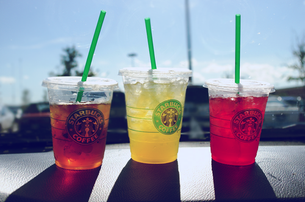
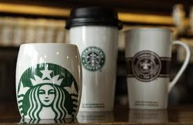

Starbucks Corporation
is an American global coffee company and coffeehouse chain based in Seattle, Washington. Starbucks is the largest coffeehouse company in the world, with 20,891 stores in 62 countries, including 13,279 in the United States, 1,324 in Canada, 989 in Japan, 851 in the People's Republic of China, 806 in the United Kingdom, 556 in South Korea, 377 in Mexico, 291 in Taiwan, 206 in the Philippines, 179 in Turkey, 171 in Thailand, and 167 in Germany. In addition, Starbucks is an active member of the World Cocoa Foundation.
Starbucks locations serve hot and cold beverages, whole-bean coffee, microground instant coffee, full-leaf teas, pastries, and snacks. Most stores also sell packaged food items, hot and cold sandwiches, and items such as mugs and tumblers. Starbucks Evenings locations also offer a variety of beers, wines, and appetizers after 4pm. Through the Starbucks Entertainment division and Hear Music brand, the company also markets books, music, and film. Many of the company's products are seasonal or specific to the locality of the store. Starbucks-brand ice cream and coffee are also offered at grocery stores.
From Starbucks' founding in 1971 as a Seattle coffee bean roaster and retailer, the company has expanded rapidly. Since 1987, Starbucks has opened on average two new stores every day. Starbucks had been profitable as a local company in Seattle in the early 1980s but lost money on its late 1980s expansion into the Midwest and British Columbia. Its fortunes did not reverse until 1990 when it registered a small profit. By the time it expanded into California in 1991 it had become trendy. The first store outside the United States or Canada opened in the mid-1990s, and overseas stores now constitute almost one third of Starbucks' stores. The company planned to open a net of 900 new stores outside of the United States in 2009, but has announced 300 store closures in the United States since 2008.
History
The first Starbucks opened in Seattle, Washington, on March 30, 1971 by three partners who met while students at the University of San Francisco: English teacher Jerry Baldwin, history teacher Zev Siegl, and writer Gordon Bowker. The three were inspired to sell high-quality coffee beans and equipment by coffee roasting entrepreneur Alfred Peet after he taught them his style of roasting beans. Originally the company was to be called Pequod, after a whaling ship from Moby-Dick, but this name was rejected by some of the co-founders. The company was instead named after the chief mate on the Pequod, Starbuck.
The first Starbucks cafe was located at 2000 Western Avenue from 1971–1976. This cafe was later moved to 1912 Pike Place Market; never to be relocated again.[13] During this time, the company only sold roasted whole bean coffees and did not yet brew coffee to sell.[14] During their first year of operation, they purchased green coffee beans from Peet's, then began buying directly from growers.
Products
- Tea
- Coffee quality
- Other Products
Starbucks entered the tea business in 1999 when it acquired the Tazo brand for US$8.1 million. In late 2012, Starbucks paid US$620 million to buy Teavana. As of November 2012, there is no intention of marketing Starbucks' products in Teavana stores, though the acquisition will allow the expansion of Teavana beyond its current main footprint in shopping malls.
Kevin Knox, who was in charge of coffee quality at Starbucks from 1987 to 1993, recalled on his blog in 2010 how George Howell, coffee veteran and founder of the Cup of Excellence, had been appalled at the dark roasted beans that Starbucks was selling in 1990. Talking to the New York Times in 2008, Howell stated his opinion that the dark roast used by Starbucks does not deepen the flavor of coffee, but instead can destroy purported nuances of flavor. The March 2007 issue of Consumer Reports compared American fast-food chain coffees and ranked Starbucks behind McDonald's Premium Roast. The magazine called Starbucks coffee "strong, but burnt and bitter enough to make your eyes water instead of open".

In 2012, Starbucks introduced Starbucks Verismo, a line of coffee makers that brew espresso and regular coffee from coffee capsules, a type of pre-apportioned single-use container of ground coffee and flavorings utilizing the K-Fee pod system. In a brief review of the 580 model, Consumer Reports described the results of a comparative test of the Verismo 580 against two competitive brands: "Because you have to conduct a rinse cycle between each cup, the Verismo wasn't among the most convenient of single-serve machines in our coffeemaker tests. Other machines we've tested have more flexibility in adjusting brew strength—the Verismo has buttons for coffee, espresso, and latte with no strength variation for any type. And since Starbucks has limited its coffee selection to its own brand, there are only eight varieties so far plus a milk pod for the latte."
